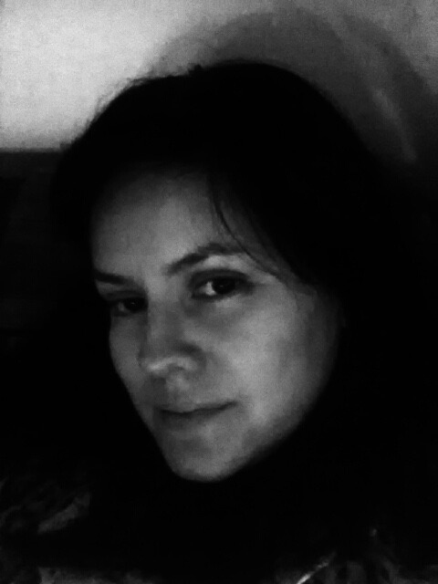

About me
Hello everybody!! I was born in Mexico. I studied Chemistry in the Autonomous National University of Mexico which is one of the oldest universities in North America. My bachelor's thesis was focused on the improvement of the quality of the tap water of Mexico City. Then, I moved to California to purse my doctorate degree. I also did a postdoctoral training. I did both studies at the University of California which is one of the biggest educational systems in USA (UC Davis and UCLA). Part of my studies were funded through the National Science of Council of Mexico.
Currently, I live in the Seattle area and I work as part of the R&D division in a private laboratory. The focus of my research is developing immunoassays which have application in the field of diagnotics of human diseases. These immunoassays must be efficient, reliable and cheap since they might be used in clinical settings in rural areas around the world. We strongly believe that healthcare needs to be accesible for everyone in the world.
I love spending time with my son Andres. We have a especial bond trying to learn as much as we could about animals. Andres loves reptiles and he hope to become a 'lizard' scientist one day.